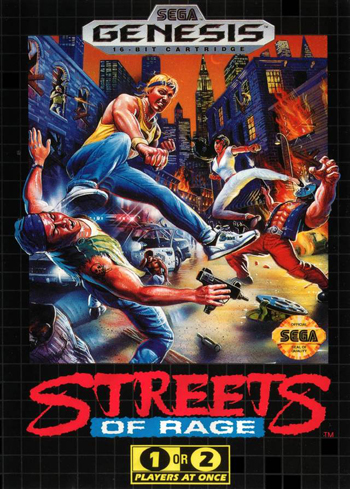

Retro Gamer Cave
Mega Drive(Geneis)
A grande aposta da SEGA
Empresa fabricante:SEGA
Desenvolvido por:Hideki Sato
Ano de lancamento:1988
O Mega Drive foi um dos maiores impactos da história dos videogames.Conseguindo se intrometer num mercado quase monopolizado pela Nintendo e durante boa parte de sua vida útil, manteve-se à frente da rival no maior mercado do mundo, o americano. Algo pouco antes inimaginável.O console teve vários acessórios, como o Sega CD e o Sega 32X, que ampliavam suas funções. O Genesis vendeu entre 29 e 40 milhões de unidades no mundo todo.
Os principais chamarizes do Mega Drive, em seu lançamento, eram tanto seu visual arrojado quanto a qualidade gráfica de seus jogos, em comparação com a concorrência.uma das pricipais estrategias da SEGA para impulsionar as vendas e a popularidade do Mega Drive foi usar a imagem de celebridades como por exemplo o rei do pop Michael Jackson no jogo "Michael Jackson's Moonwalker" e celebridades esportivas como Larry Bird.
TOP 3 JOGOS DO MEGA DRIVE
-
SONIC,THE HEDGEHOG 2(1992):A sequência do jogo que consagrou o mascote da Sega, Sonic 2 trouxe mais velocidade, diversão e desafio, além da possibilidade de jogar com dois personagens, Sonic e Tails. O jogo tem fases memoráveis, uma trilha sonora incrível e um modo cooperativo ou competitivo para dois jogadores. Embora Sonic 2 também seja um side-scrolling platformer, é notável o polimento na jogabilidade se comparado ao seu antecessor. A primeira grande diferença está no ritmo da aventura: o ouriço azul não demora para ganhar velocidade nos estágios, agora mais longos, mesmo aqueles com vários obstáculos; além disso, eles passaram a possuir dois atos em vez de três, totalizando 20 fases.
-
STREETS OF RAGE(1991):Um dos melhores jogos de briga de rua de todos os tempos, Streets of Rage 2 coloca o jogador no controle de quatro personagens diferentes, cada um com seus próprios golpes e habilidades. O jogo tem gráficos e animações impressionantes, uma jogabilidade viciante e uma das melhores trilhas sonoras do Mega Drive. Por não ser uma adaptação dos arcades,cujo objetivo é engolir moedinhas do jogador,Streets of Rage possui uma jogabilidade mais consistente, sem picos desproporcionais de dificuldade e também oferece uma experiência mais longa que o rival Final Fight ,A ação é intensa e gratificante.

-
GUNSTAR HEROES(1993):Esse e particularmente um dos meus favoritos ,Gunstar Heroes é uma obra-prima da Treasure, uma empresa formada por ex-funcionários da Konami. O jogo permite ao jogador combinar quatro tipos de armas diferentes, criando efeitos variados e divertidos. O jogo também tem chefes gigantescos, fases criativas e um modo cooperativo para dois jogadores.O jogador pode escolher uma de quatro tipos de armas (Força, Fogo, Teleguiada e Laser), sendo que ao longo do game será possível combiná-las para formar novas e mais poderosas armas.Visualmente o jogo é um espetáculo à parte, todo o design artístico, desde os cenários de fundo até as animações e visual dos personagens/inimigos são únicos e extremamente criativos, com uma pegada meio de anime, bastante colorido e brilhante